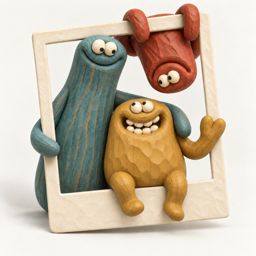
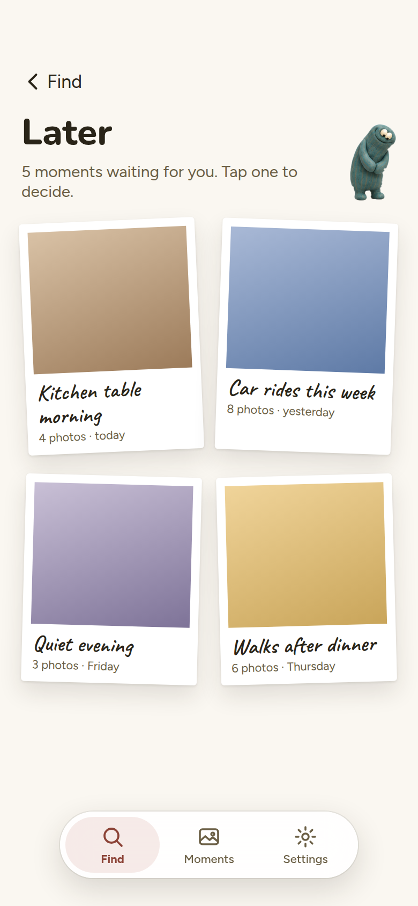
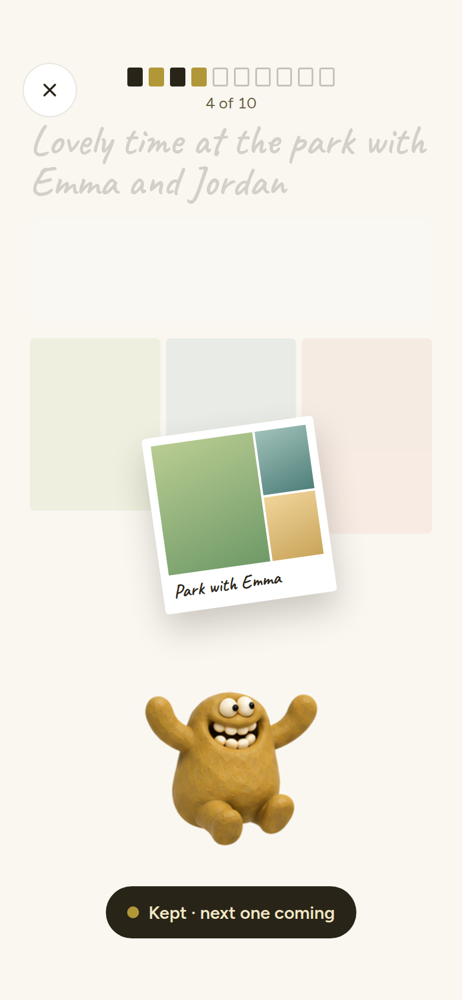
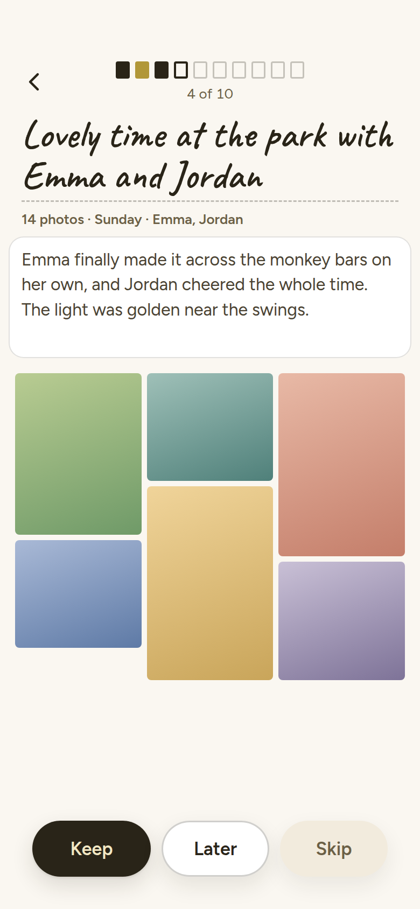
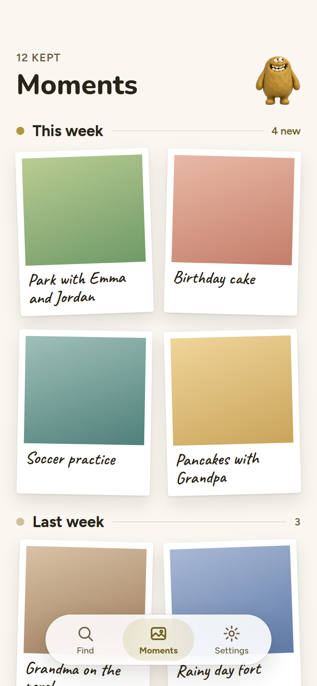

Find the photos you forgot you loved.
Ten moments. Five minutes. On your iPhone.
Beta on TestFlight
TestFlight opens soon. Leave your email and we'll send the invite.





Next section goes here
Hero prototype. Character art here is a stand-in until the larger poses are made.